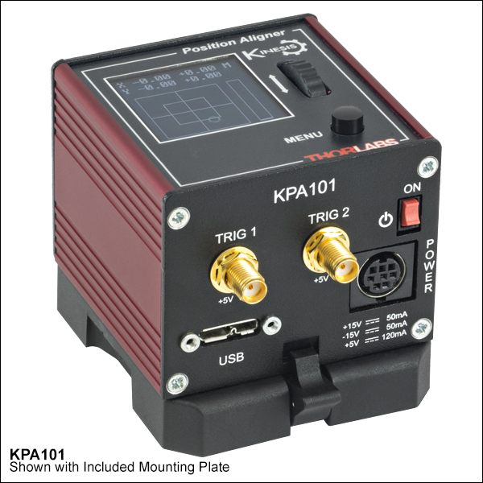
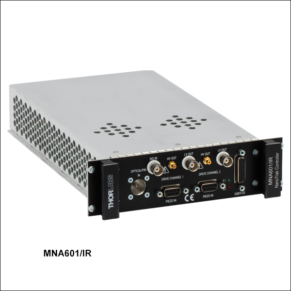

KPA101

Controller Description
The KPA101 is a compact single-channel K-Cube controller from Thorlabs designed for automatic alignment of optical components using Position-Sensitive Detectors (PSDs). It provides real-time, feedback-based control for high-precision optical alignment tasks. The KPA101 is ideal for dynamic alignment in optical systems and integrates seamlessly with Thorlabs’ PSDs and alignment peripherals. It features USB connectivity for computer control via Thorlabs’ Kinesis Software or QuantumION's Thorlabs Cube Repository.
Controller Use-Cases
- KPA101 is used in applications requiring automated optical alignment, such as:
- Beam Stabilization: Maintaining optical beam alignment during system operation.
- Optical System Setup: Automating the alignment of optical components like lenses and mirrors.
- Laser Systems: Dynamic alignment of laser beams for stability and throughput optimization.
Peripherals Examples
- Position-Sensitive Detectors

- Motorized Mirror Mounts

- Auto-Aligning Modules

API Reference
Bases: Tpa
KPA101 Position Sensing Detector Auto Aligner driver implementation.
Source code in venv/lib/python3.9/site-packages/thorlabs_cube/driver/kcube/kpa.py
8 9 10 11 12 13 14 15 16 17 18 19 20 21 22 23 24 25 26 27 28 29 30 31 32 33 34 35 36 37 38 39 40 41 42 43 44 45 46 47 48 49 50 51 52 53 54 55 56 57 58 59 60 61 62 63 64 65 66 67 68 69 70 71 72 73 74 75 76 77 78 79 80 81 82 83 84 85 86 87 88 89 90 91 92 93 94 95 96 97 98 99 100 101 102 103 104 105 106 107 108 109 110 111 112 113 114 115 116 117 118 119 120 121 122 123 124 125 126 127 128 129 130 131 132 133 134 135 136 137 138 | |
__init__(serial_dev)
Initialize the KPA101 driver.
:param serial_dev: Serial device identifier.
Source code in venv/lib/python3.9/site-packages/thorlabs_cube/driver/kcube/kpa.py
11 12 13 14 15 16 17 18 | |
get_digital_outputs()
async
Get digital outputs for TRIG1 and TRIG2.
:return: Status of TRIG1 and TRIG2 outputs.
Source code in venv/lib/python3.9/site-packages/thorlabs_cube/driver/kcube/kpa.py
128 129 130 131 132 133 134 135 136 137 138 | |
get_trigger_config()
async
Get trigger configuration for both TRIG1 and TRIG2.
:return: A tuple containing trigger configuration parameters for TRIG1 and TRIG2.
Source code in venv/lib/python3.9/site-packages/thorlabs_cube/driver/kcube/kpa.py
99 100 101 102 103 104 105 106 107 108 109 110 111 112 | |
handle_message(msg)
async
Handle incoming messages from the KPA101 device.
:param msg: Message object received from the device.
Source code in venv/lib/python3.9/site-packages/thorlabs_cube/driver/kcube/kpa.py
20 21 22 23 24 25 26 27 28 29 30 31 32 33 34 35 36 37 38 39 40 41 42 43 44 45 46 47 48 49 50 51 | |
set_digital_outputs(trigOne, trigTwo)
async
Set digital outputs for TRIG1 and TRIG2.
:param digital_outputs: Status of TRIG1 and TRIG2 outputs.
Source code in venv/lib/python3.9/site-packages/thorlabs_cube/driver/kcube/kpa.py
114 115 116 117 118 119 120 121 122 123 124 125 126 | |
set_trigger_config(trig1_mode, trig1_polarity, trig1_sum_min, trig1_sum_max, trig1_diff_threshold, trig2_mode, trig2_polarity, trig2_sum_min, trig2_sum_max, trig2_diff_threshold)
async
Set trigger configuration for both TRIG1 and TRIG2.
:param trig1_mode: TRIG1 operating mode. :param trig1_polarity: TRIG1 polarity. :param trig1_sum_min: TRIG1 sum minimum. :param trig1_sum_max: TRIG1 sum maximum. :param trig1_diff_threshold: TRIG1 differential threshold. :param trig2_mode: TRIG2 operating mode. :param trig2_polarity: TRIG2 polarity. :param trig2_sum_min: TRIG2 sum minimum. :param trig2_sum_max: TRIG2 sum maximum. :param trig2_diff_threshold: TRIG2 differential threshold.
Source code in venv/lib/python3.9/site-packages/thorlabs_cube/driver/kcube/kpa.py
53 54 55 56 57 58 59 60 61 62 63 64 65 66 67 68 69 70 71 72 73 74 75 76 77 78 79 80 81 82 83 84 85 86 87 88 89 90 91 92 93 94 95 96 97 | |